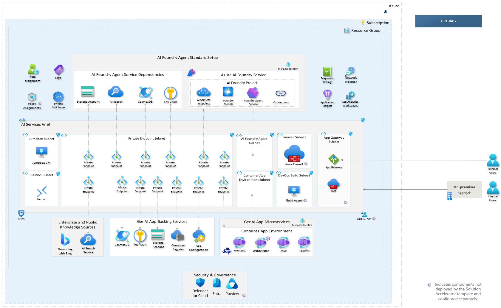

GPT-RAG Solution Accelerator
GPT-RAG is an enterprise-grade accelerator for building conversational AI assistants on Azure, powered by intelligent agents that understand questions, find the right information, and deliver clear, accurate answers using trusted enterprise data.
Designed with Zero-Trust security and Infrastructure as Code (IaC) principles from the ground up, GPT-RAG accelerates production deployments while ensuring consistency, governance, and operational excellence. It supports text, image, and voice scenarios, enabling organizations to rapidly create rich multimodal experiences.
Latest Stable Release v2.3.0 Pre-release v2.4.0
 Zero-Trust Architecture
Core Services
| Services | Description |
|---|---|
| Orchestrator | Manages multi-agent workflows and retrieves context using Semantic Kernel and Azure AI. |
| Web UI | User interface for chat interactions, supports streaming and custom themes. |
| Data Ingestion | Extracts, chunks, and indexes enterprise data for optimized retrieval. |
| MCP Server | Implements the Model Context Protocol for tool hosting and business logic integration. |
Contributing
We welcome contributions from the community! Check our Contribution Guidelines for CLA, code of conduct, and PR guidelines.